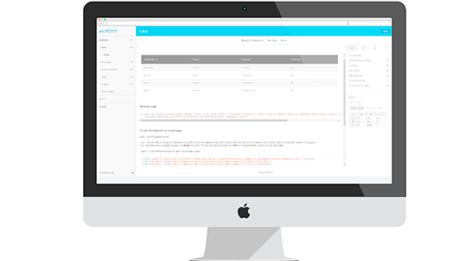

atom Elements
A collection of basic and composite form elements, data display elements like tables and lists, and simple page elements like headers, footers, loaders, notifications, maps, tabs and more. These are basic building blocks that can be used to create web and mobile applications.